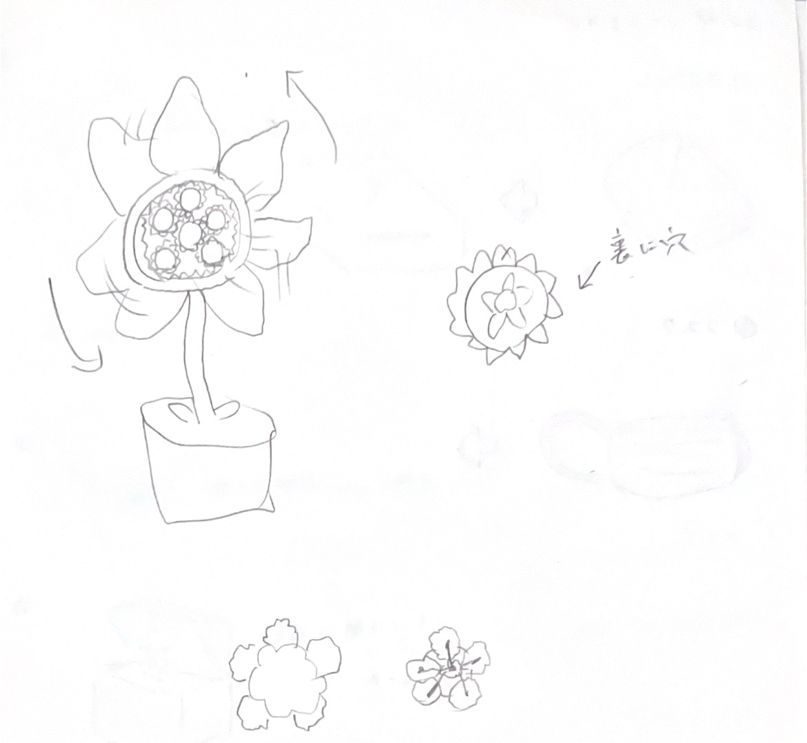
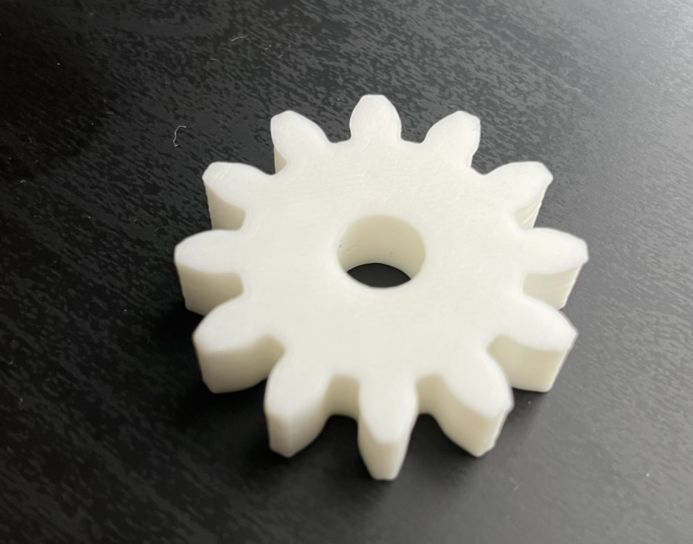
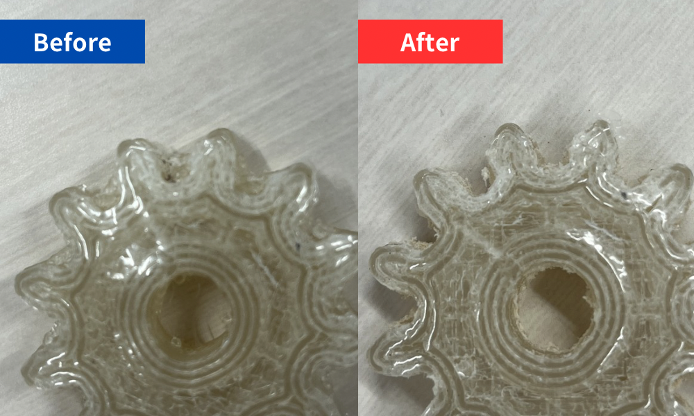

このページについて
このページでは、ペレット化したクリアファイルを利用したモノづくりプロジェクト の記録をまとめます。
横浜市さんからご教授いただいたサーキュラーエコノミーについてのお話は以下のページをご覧ください。
２. クリアファイル再生プロジェクト
横浜市さんからご教授いただいたサーキュラーエコノミーについてのお話は以下のページをご覧ください。
２. クリアファイル再生プロジェクト
モノづくりのテーマ
実用性のあるなしに関わらず、さまざまな案が出されました。
3Dプリンターならではの利点を生かしつつ、魅力的なモノづくりを目指します。

なかでも、「植物」「アクセサリー」「ケース」「看板」「アメニティ」といった案が多く出されました。
印刷方法やIoTなどとの組み合わせにより、より良いモノができるのではないかという考えもあります。

こちらは、みつをが考えた上記５つのビジュアルイメージです。
3Dプリンターならではの利点を生かしつつ、魅力的なモノづくりを目指します。
なかでも、「植物」「アクセサリー」「ケース」「看板」「アメニティ」といった案が多く出されました。
印刷方法やIoTなどとの組み合わせにより、より良いモノができるのではないかという考えもあります。
こちらは、みつをが考えた上記５つのビジュアルイメージです。
オリジナルの花をつくる
実現の可能性が高そうな「植物」のテーマで、花のオブジェを試作してみることにしました。
ただ普通の花をモデリングするだけでは面白くないので、

こちらがオリジナルの花のアイデアスケッチになります。
生命を宿す植物の反対にあるものは何かを考え、無機質に動き続ける機械というコンセプトを思い浮かべました。
そこで、
まずは、おおよそのサイズ感などをテストするため、従来の3Dプリンター（Creakity Ender-3 S1 Pro）を使い、PLA素材で歯車をプリントしてみます。
サイズは直径約3.5mm、厚さ10mm、歯数が12の歯車を設計、印刷してみます。プリント時間はおよそ40分でした。

現時点ではモデリングおよびサイズ感に問題がないと判断し、
出来上がりの差を比較するため、先ほどと同じデータを使用することにしました。
ペレット式3Dプリンターは従来のものと異なり、印刷する前に台座に両面テープとPPフィルムを貼り、温度を35~40℃に保つ必要があります。
また、使用するソフトも違うため、詳しい操作方法については備え付けのマニュアルを参照のうえ、不明点はファブラボのスタッフさんに尋ねるのがよいかと思います。 データが細かく体積もやや大きめのため、プリント時間はおよそ2時間でした。
温度管理にかかる時間も含めると、従来の3~4倍近いプリント時間が必要になりました。 余裕をもって制作したいところです。

こちらが完成品になります。印刷完了から半日ほどおいてはいますが、はがす際に接着面のゆがみが生まれてしまいました。
歯の部分など細かい造形部にすこしの乱れはありますが、おおむね許容できる精度で印刷ができました。


PLA製のものと比較すると、細部造形の乱れや、台座接地面の湾曲 が目立ちます。
湾曲は大きな問題にはなりませんが、歯と歯の間の造形が乱れてしまうと、歯車としてうまく機能しない恐れがあります。
考えついた解決策として、以下の２つを実行しようと思います。
ファブラボにある棒やすりを使用し、②を実行してみました。
固い部分もありましたが、なんとか滑らかな形にすることに成功しました！
しかし、このサイズのものを調整するだけでも一苦労だったので、やすり頼りで細かすぎるデザインをするのは避けた方がよさそうです...
作品の制作
ここまでの試作を踏まえて、作品のコンセプトにいくつか改善点が見えてきました。
特に、シンプルな歯車型では出力形成の強みを十分に活かせていないという気付きがありました。
そこで、まずは歯車パーツの形状を変更してみることにしました。


手始めに、Fusionのアドインを使用せず、花のような形状をデザイン してみました。
１枚目の試作品は丸みを帯びた形状で、非常に花らしい形状ですが、パーツ同士が滑ってしまい歯車として機能しませんでした。
２枚目の試作品は歯車型に寄せた形状で機能はしましたが、中心軸が大きすぎるのか花に見えにくい出来になってしまいました。

ここまでの成果を踏まえて、歯車としての機能と花らしい形状を両立したデザインを意識して３つ目の試作品を出力しました。
歯の長さと間隔を十分に確保しつつ、表面に立体的な造形を施し花のような見た目を強調しています。
続いて、このデータをそのままペレット式3Dプリンターで出力してみることにしました。

今回のデータは、歯数を減らすなどデザインをシンプルにしたことが影響し、かなり綺麗に出力されました。
出力時間はおよそ50分ほどでした。前回と同等のサイズ感であることを鑑みると、細かい造形を避けることでプリント効率を大幅に向上できる といえます。

歯の間など細部の造形にも乱れは少なく、やすり加工なしでもPLA製のものと上手くかみ合いました。
また、使用するソフトも違うため、詳しい操作方法については備え付けのマニュアルを参照のうえ、不明点はファブラボのスタッフさんに尋ねるのがよいかと思います。 データが細かく体積もやや大きめのため、プリント時間はおよそ2時間でした。
温度管理にかかる時間も含めると、
こちらが完成品になります。印刷完了から半日ほどおいてはいますが、はがす際に接着面のゆがみが生まれてしまいました。
歯の部分など細かい造形部にすこしの乱れはありますが、おおむね許容できる精度で印刷ができました。
PLA製のものと比較すると、
湾曲は大きな問題にはなりませんが、歯と歯の間の造形が乱れてしまうと、歯車としてうまく機能しない恐れがあります。
考えついた解決策として、以下の２つを実行しようと思います。
①印刷サイズを大きくするか歯の間隔をあける
②造形が乱れている部分をやすりで修正する
②造形が乱れている部分をやすりで修正する
ファブラボにある棒やすりを使用し、②を実行してみました。

固い部分もありましたが、なんとか滑らかな形にすることに成功しました！
しかし、このサイズのものを調整するだけでも一苦労だったので、やすり頼りで細かすぎるデザインをするのは避けた方がよさそうです...
ここまでの試作を踏まえて、作品のコンセプトにいくつか改善点が見えてきました。
特に、シンプルな歯車型では出力形成の強みを十分に活かせていないという気付きがありました。
そこで、まずは歯車パーツの形状を変更してみることにしました。
手始めに、
１枚目の試作品は丸みを帯びた形状で、非常に花らしい形状ですが、パーツ同士が滑ってしまい歯車として機能しませんでした。
２枚目の試作品は歯車型に寄せた形状で機能はしましたが、中心軸が大きすぎるのか花に見えにくい出来になってしまいました。
ここまでの成果を踏まえて、歯車としての機能と花らしい形状を両立したデザインを意識して３つ目の試作品を出力しました。
歯の長さと間隔を十分に確保しつつ、表面に立体的な造形を施し花のような見た目を強調しています。
続いて、このデータをそのままペレット式3Dプリンターで出力してみることにしました。
今回のデータは、歯数を減らすなどデザインをシンプルにしたことが影響し、かなり綺麗に出力されました。
出力時間はおよそ50分ほどでした。前回と同等のサイズ感であることを鑑みると、
歯の間など細部の造形にも乱れは少なく、やすり加工なしでもPLA製のものと上手くかみ合いました。